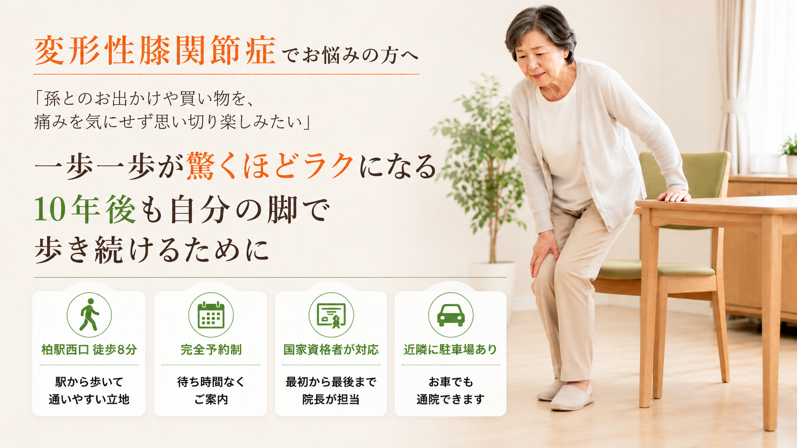

こんなお悩みを抱えていませんか？
- 歩き始めや立ち上がりで膝が痛む
- 階段の上り下りで膝に強い負担を感じる
- 正座やしゃがむ動作ができなくなってきた
- 膝に水がたまる、腫れぼったい感じがある
- 膝の曲げ伸ばしで引っかかりや違和感がある
- 朝起きたときに膝がこわばり、動きにくい
- 整形外科で「年齢のせい」と言われた
- もう以前のようには歩けないと諦めている
写真は左右にスライドできます

カウンセリング

身体の状態チェック
状態説明、施術方針の説明

施術開始

セルフケアと施術後の説明
変形性膝関節症でも膝だけを見ない理由
変形性膝関節症と言われると、膝の中だけが気になりやすいものです。けれど日常のつらさには、画像上の変化だけでなく、歩き方・立ち上がり方・股関節や足首の使い方が関係することもあります。
当院では、医療機関での診断や検査結果を否定せず、そのうえで「生活の中で膝に負担が集まりやすい場面」を確認します。椅子から立つとき、階段を降りるとき、歩き始めの一歩目など、同じ変形性膝関節症でもつらくなる動きは人によって違います。
膝だけを揉むのではなく、股関節・足首・体幹の使い方まで見ていくことで、今の状態に合わせた無理のない進め方を一緒に考えます。
POINT 1
歩き方のクセ
かばって歩く期間が長いと、片側の膝に負担が集まりやすくなることがあります。
POINT 2
立ち上がり方
膝だけで踏ん張るクセがあると、椅子や床から立つ動作でつらさが出やすくなります。
POINT 3
股関節・足首の使い方
股関節や足首が使いにくいと、階段や歩行の負担を膝が引き受けやすくなります。
✦ 大切にしていること
「変形性膝関節症だから仕方ない」と決めつけるのではなく、今の生活で見直せる動き方を一つずつ整理します。強い刺激や無理な運動ではなく、安心して続けやすい方法から進めます。
整体でできること・できないこと
不安な状態で相談先を探している方にこそ、できる範囲をはっきりお伝えします。当院は医療機関ではありません。医療で確認することと、整体院で支えられることを分けて進めます。
当院では行わないこと
- 変形性膝関節症かどうかの診断
- レントゲンやMRIなどの画像検査
- 薬の処方、注射、医療的な処置
- 手術が必要かどうかの判断
- 変形やすり減った軟骨を元に戻すこと
当院で確認できること
- 歩き方や立ち上がり方の確認
- 膝に負担が集まりやすい動きの整理
- 股関節、足首、体幹の使い方の確認
- 筋肉や関節の動きやすさの調整
- 自宅でできるセルフケアの提案
- 病院と併用しながら日常生活を楽にするためのサポート
当院の変形性膝関節症へのアプローチ
施術だけで終わらせず、日常の歩き方や立ち上がり方まで確認します。無理な運動ではなく、今の状態に合わせた運動療法を組み合わせます。

1
STEP
緩める
膝まわりと股関節・足首のこわばりを丁寧に整える
強い刺激ではなく、痛みや不安を確認しながらソフトに進めます。膝まわりだけでなく、膝への負担に関係しやすい股関節や足首の動きも一緒に確認します。
2
STEP
使いやすくする
膝だけで踏ん張らないよう、支える筋肉を使いやすくする
寝たまま、座ったままなど、今の膝に負担をかけにくい姿勢から始めます。股関節・足首・体幹が使いやすくなるよう、できる範囲の運動療法を取り入れます。
3
STEP
日常へつなげる
歩き方・立ち上がり方・階段動作まで確認する
施術後は、実際に歩く、立つ、膝を曲げ伸ばしするなど、生活で困っている動きを一緒に確認します。家で続けやすいセルフケアも、必要な分だけお伝えします。
病院と併用しながら相談できます
当院は医療機関ではありません。医師の診断や検査結果を否定せず、注射・薬・リハビリと併用しながら、整体院で確認できる「日常生活での身体の使い方」を整理します。
- 検査結果や医師から受けた説明が分かるものがあれば、来院時にお持ちください。
- 注射や薬の判断は医療機関にお任せし、当院では歩き方・立ち上がり方・セルフケアを確認します。
- 手術を勧められた場合も、判断は医師と相談しながら進めてください。当院では、今の生活で膝への負担を減らすためにできることを整理します。
強い腫れ、熱感、急な悪化、夜も眠れないほどの強い痛みがある場合は、まず医療機関での確認を優先してください。
通院頻度の目安
最初の1〜2ヶ月は週1〜2回のペースをおすすめしています。頻繁に通うことで「良い状態」をしっかり体に記憶させます。痛みが安定してきたら徐々に間隔を広げていきます。最終的には「ご自身でケアでき、整体に通わなくてもよい状態」での卒業を目指しますので、永遠に通い続ける必要はありません。
最初の1〜2ヶ月：週1〜2回
安定後：2週に1回
メンテナンス期：月1回
PATIENT VOICE
膝や歩き方のお悩みでご相談いただいた方の声
変形性膝関節症と関わりやすいお悩みで来院された方の内容を掲載しています。症状や経過には個人差があるため、初回は状態を確認しながら方針をご説明します。

K.K様
お悩み
坐骨神経痛・膝の痛み・腰の痛み
変化
施術後は身体が軽くなり、痛みのポイントを丁寧に見てもらえる安心感がありました。
ひとこと
誠実で信頼できる先生です。日々勉強されている姿勢にも安心できます。

K.T様
お悩み
強い腰痛と長年の膝痛
変化
施術とセルフトレーニングを続けることで、歩くつらさや刺すような膝の痛みが軽くなりました。
ひとこと
穏やかで相談しやすい先生なので、身体の悩みを気軽に話せました。

Y.O様
お悩み
整形外科に通っても続く膝関節痛
変化
自宅でのストレッチと週1回の施術を続ける中で、階段の昇り降りや歩行が楽になったと感じられました。
ひとこと
痛み止めや注射に抵抗がある方も、まずは身体の状態を相談してみてください。
※掲載しているお声は掲載許可をいただいた方のものです。個人の感想であり、成果を保証するものではありません。
初回の流れ
変形性膝関節症と言われた方も、初回から強い施術や無理な運動を行うことはありません。まずはお話と動きの確認から、落ち着いて進めます。
LINEまたは電話で予約
今の膝の状態、病院で言われた内容、希望日時をお知らせください。
問診
いつから、どの動きでつらいのか、生活で困っている場面をうかがいます。
膝の状態確認
曲げ伸ばし、腫れぼったさ、痛みが出る範囲などを無理のない範囲で確認します。
歩き方・立ち上がり方の確認
膝に負担が集まりやすい動きがないか、普段の動作に近い形で見ていきます。
施術
膝まわり、股関節、足首などを状態に合わせて整えます。
必要な運動・セルフケアの説明
家でできる範囲のケアや、避けた方がよい動きを分かりやすくお伝えします。
今後の方針の説明
通い方の目安や、病院との併用で確認したいことも含めて整理します。
「先生に出会えて良かった。」
「もっと早く来ていれば良かった」と
多くの方から感謝の声を頂いています。まずは一度試してください。
足腰のつらさを一緒に整理し、動きやすい身体づくりをサポートします。
通常施術費
10,000円(税込)
のところ
初回限定
特別価格
1,980円(税込)
近日中まで
6名様限定割引
残り2名様
初回施術費
全額返金保証
痛みの原因を
徹底解明
動き全体を
プロが解析
LINEからご希望日時を送ってください。空き状況を確認して、こちらから返信いたします。
会員登録不要
予約完了ではありません
確認後に返信します
お支払い方法
現金
各種クレジットカード
PayPay
【受付時間】9:00〜19:00 【定休日】日曜
施術中は電話に出られないことがあります。後ほど折り返しお電話いたします。
変形性膝関節症に関するよくあるご質問
Q.
変形性膝関節症と言われましたが相談できますか？
A.
ご相談いただけます。当院では診断や画像検査は行いませんが、歩き方や立ち上がり方、股関節や足首の使い方を確認し、日常生活で膝に負担が集まりやすい動きを一緒に整理します。
Q.
病院に通いながらでも大丈夫ですか？
A.
大丈夫です。医師の診断や検査結果を否定せず、病院で確認することと整体院で確認できる日常動作のクセを分けてお伝えします。
Q.
注射を受けていても相談できますか？
A.
相談できます。注射や薬の判断は医療機関の領域です。当院では、注射後の日常生活で膝に負担が戻りやすい動き方やセルフケアを確認します。
Q.
手術を勧められた場合でも相談できますか？
A.
ご相談いただけます。ただし手術の必要性や時期を判断することはできません。医師の説明を大切にしながら、歩き方や立ち上がり方など日常生活で確認できることを整理します。
Q.
歩くと痛いのですが、運動しても大丈夫ですか？
A.
痛みが強くなる動きは避け、今の状態に合う範囲から始めることが大切です。初回に膝の状態と動き方を確認し、無理のない運動やセルフケアをご提案します。
Q.
どれくらい通う必要がありますか？
A.
状態や生活で困っている場面によって異なります。初回で膝の状態、歩き方、セルフケアのしやすさを確認し、必要な頻度や進め方を分かりやすくご説明します。
変形性膝関節症と言われ、不安を抱えている方へ
注射や湿布だけで様子を見るべきか、手術の話をどう受け止めればよいか、迷うこともあると思います。
当院では医療機関での説明を大切にしながら、今の膝に負担が集まりやすい動きを一緒に確認します。
まずはLINEで、現在の状態を送ってご相談ください。
柏市をはじめ、松戸市・我孫子市・取手市・野田市・流山市・守谷市など近隣エリアからもご来院いただいています。
アクセス
- 院名
- 整体院ひざこぞう
- 電話番号
- 04-7114-3274
- 住所
- 〒277-0841 千葉県柏市あけぼの4-4-3 BoaSorte柏305
- アクセス
- 柏駅西口から徒歩約8分 マンション内の完全予約制整体院です。 詳しいアクセスを見る
| 時間 | 月 | 火 | 水 | 木 | 金 | 土 | 日 |
|---|---|---|---|---|---|---|---|
| 9:00〜19:00 | ● | ● | ● | ● | ● | ● | - |
完全予約制／定休日：日曜
詳しい道順・建物入口・駐車場については、アクセスページでご確認いただけます。
最後に、ご相談はこちらから
一人で悩まず、まずは私にご相談ください。
メールフォームからお名前・お悩み・ご希望日時をお送りください。確認後、折り返しご連絡いたします。
送信が完了しました。
アクセスを確認する